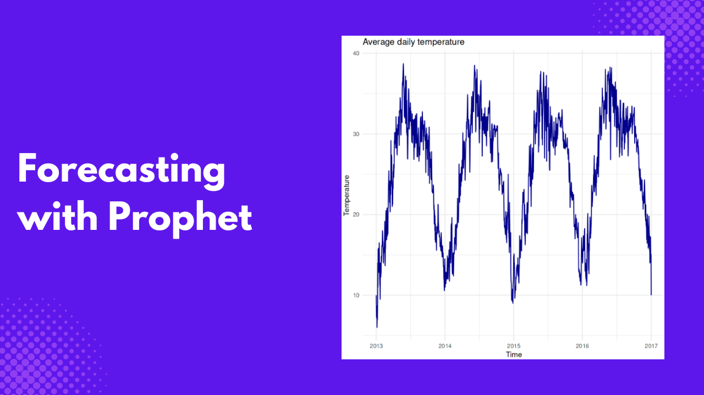
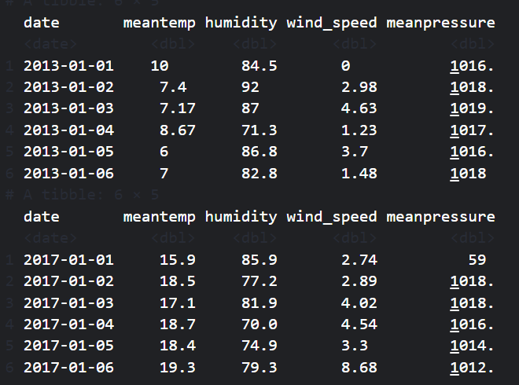

Have you ever wondered how future prices of currencies, cryptocurrencies, or any other measures are predicted and accurately obtained? Well, this is forecasting at large: forecasting lets you get future values of a measure based on historical data. This historical data is also referred to as time series data, and this article will explain how to use the Facebook Prophet package in R to forecast future values of a measure.
Prerequisites
This tutorial will use India’s daily climate data from 2013 to 2017 to build a facebook prophet model. The data has four parameters;
meantemphumiditywind_speedmeanpressure
We will limit the focus of this article to the meantemp measured in Celsius; you can try for other parameters as an exercise after going through this tutorial. The following are the packages we will need
dplyrfor data transformationggplot2for data visualizationprophetfor building the forecasting model
What is Time Series Data?
Time series data is a collection of data points collected sequentially or chronologically, often with equal time intervals. These intervals are either hourly, daily, weekly, and so on. An example is the yearly child mortality in a country or the daily close price of Bitcoin. Time series data is applied in various fields, from forecasting mortality rates in healthcare to fraud detection in finance and pattern recognition.
Key features of time series data
Before calling data, a time series data must have some features. Here is an outline of these features.
- Chronological Order: Observations are ordered in time.
- Time Dependency: The current value in the series depends on past values.
- Stationarity: The mean and variance are constant over time, indicating a consistent pattern.
- Trend: Long-term upward or downward movement.
- Seasonality: Regular and repeating patterns over specific intervals.
- Noise: Random variation or irregular patterns.
Preparing the Dataset
Let’s load the libraries and data into our R session.
library(prophet)
library(dplyr)
library(ggplot2)
climate_train <- read_csv("/kaggle/input/daily-climate-time-series-data/DailyDelhiClimateTrain.csv")
climate_test <- read_csv("/kaggle/input/daily-climate-time-series-data/DailyDelhiClimateTest.csv")
print(head(climate_train))
print(head(climate_test))
We will use the climate_train to train the model and the climate_test to test it. The climate_train model contains data from 2013-01-01 to 2017-01-01, while the climate_test data ranges from 2017-01-01 to 2017-04-24.
Before building the Facebook prophet model, we need to subset the date and mean temp variables and rename them ds and y, respectively, as required by the prophet() function.
climate_train <- climate_train |>
select(date, meantemp) |>
rename(ds = date, y = meantemp) |>
mutate(ds = as.Date(ds))
climate_test <- climate_test |>
select(date, meantemp) |>
rename(ds = date, y = meantemp) |>
mutate(ds = as.Date(ds))
print(head(climate_train))
print(head(climate_test))
Visualizing Time Series Data
Let’s plot the training data to see how the average daily temperature changes with time.
ggplot(climate_train, aes(x = ds, y = y)) +
geom_line(color = "darkblue") +
labs(
title = "Average Daily Temperature",
x = "Time",
y = "Temperature"
) +
theme_minimal()
The plot above shows temperatures ranging from around 10°C to 40°C. It shows a clear periodic pattern, indicating that temperatures rise and fall consistently yearly, typical of seasonal climate changes. Peaks represent summer months with higher temperatures around 30-40°C, while valleys represent winter months with lower temperatures around 10-15°C. The lowest temperature was recorded in the early months of 2013.
Building the Forecasting Model
Let’s build a forecasting model to predict future temperature values. We can achieve this by calling the prophet() function on the climate_train train dataset.
model <- prophet(climate_train)Next, we need to predict future values. But before doing that, we need to define the future dates we want to predict, which are the dates on the climate_test dataset.
future <- climate_test |>
select(ds)
head(future)
future dates variable to use for forecast. Image by Author.Then, we use the predict() function to predict future temperature values based on the model we built earlier.
forecast <- predict(model, future)The predict() function returns a data frame with several variables, but we will subset the ones we need.
forecast <- forecast[c('ds', 'yhat', 'yhat_lower', 'yhat_upper')]
head(forecast)
ds - is the date column
yhat - is the predicted temperature value
yhat_lower and yhat_upper - represent the lower and upper intervals where the actual temperature value should fall.
Visualizing Future Forecast
You can also visualize the forecast values.
plot(model, forecast)
The plot above shows that the forecast values exhibit a similar pattern to the trained values.
The Facebook prophet model also breaks down forecasts into components, where you can view the model trend and seasonality.
prophet_plot_components(model, forecast)
The top panel in the plot above shows that the overall trend in average daily temperature increases from January to April, suggesting that the average temperature is gradually rising over this period.
The middle panel, which displays the weekly seasonality, illustrates how the average temperature varies by day of the week. Temperature peaks midweek (around Wednesday) and decreases slightly towards the weekend.
The bottom pane captures the average temperature across the year, indicating a seasonal cycle. The temperature rises from January, peaking around the middle of the year (likely summer), and then declines towards the end of the year (winter).
Measuring Forecast Accuracy
There are various ways of measuring forecast accuracy, but we will use the Root Mean Square Error (RMSE) approach for this tutorial. RMSE measures forecasting accuracy by taking the mean of the squared difference of the actual value from the subtracted value and taking the square root.
\[ RMSE = \sqrt{\frac{\sum{(y - \hat{y})^2}}{n}} \]
Let’s create a new data frame called comparison, which joins our forecast values with those of the climate_test data frame and subsets just ds, y, and yhat.
comparison <- climate_test |>
left_join(forecast, by="ds") |>
select(ds, y, yhat)
head(comparison)
We are going to use the formula above to calculate the RMSE.
comparison$error <- comparison$y - comparison$yhat
# Calculate performance RMSE
rmse <- sqrt(mean(comparison$error^2))
print(paste("RMSE: ", rmse))
[1] "RMSE: 2.76289062761507"The RMSE value is approximately 2.76, which means that, on average, the model’s prediction deviates from the actual observed values by approximately 2.76°C. This indicates that the model is performing well.
Conclusion
Forecasting lets us answer many questions based on historical data. Unlike other prediction models, which are feature-based, forecasting is time-based and considers the change of a variable with time.
This tutorial taught you how to visualize and forecast time series data. Using what you learned in this tutorial, you can consider forecasting other weather parameters in the dataset or use any existing time series data. If you want to go further and have a deeper understanding of forecasting and time series, here are some invaluable resources.
Creating Time Series Visualizations in R
R Dygraphs: How to Visualize Time Series Data in R and R.
Time Series Analysis in R: How to Read and Understand Time Series Data
Facebook Prophet Documentation
Using R for Time Series Analysis
Fundamentals of time series analysis with R
Need Help with Data? Let’s Make It Simple.
At LearnData.xyz, we’re here to help you solve tough data challenges and make sense of your numbers. Whether you need custom data science solutions or hands-on training to upskill your team, we’ve got your back.
📧 Shoot us an email at admin@learndata.xyz—let’s chat about how we can help you make smarter decisions with your data.